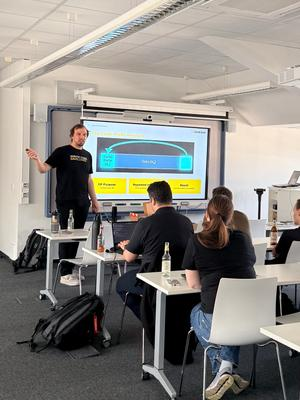
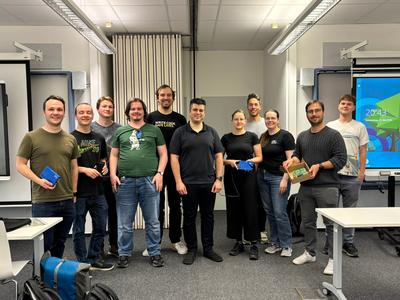
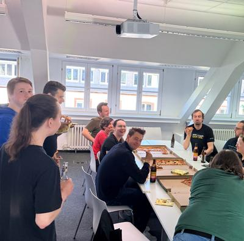

10th ISIC Award Ceremony - How to detect OFDM?
The IEEE SB Karlsruhe Signal Intelligence Challenge 2026 has come to a close, marking the tenth anniversary of this event. We would like to extend our gratitude to our sponsors, Dedrone, Emerson NI, Procitec, the IEEE Germany Section, and the KIT CEL, without whom organizing this challenge would not have been possible.
{kind=link}

At the award ceremony, Dr.-Ing. Johannes Sterz Demel from our sponsor Dedrone delivered an engaging presentation on the technical challenges of real-world signal intelligence, focusing on the decoding of OFDM signals.
{kind=link}

The past four weeks of the challenge consisted of recording, decoding, and deciphering signals to recover flags. This year, two geolocation challenges were placed in Karlsruhe, and participants had to recover the locations from live messages over-the-air and after decoding and some good guessing the locations have been found. Two teams actively participated in the challenge, and between the teams "Die transformierten Fourien" and "BruteForce" a close battle ensued in the final week. The kickoff was marked by "Die transformierten Fourien" taking the lead, but "BruteForce" quickly closed the gap by solving many of the offline challenges as the first team.
{kind=link}

In the end, "Die transformierten Fourien" have succesfully defended their lead and could score a total of 1153 points, which translates to 11 solved challenges and almost all of them as the first team. Team "BruteForce" placed second with a final score of 525 points which translates to 5 solved challenges. Interestingly, they solved every challenge as first team while not solving the same challenges as our first placed team. The first placed team was able to secure their prizes which are two SDRs, a USRP B206mini and a USRP B210 with various antennas and the second placed team also secured two SDRs, a USRP B210 and a HackRF One. The participants also enjoyed the messages and opportunities offered by our sponsors. Following the award ceremony all participants, organizers and guests at the event enjoyed some pizza and cold drinks while discussing the past three weeks.
We look forward to the next edition of the signal intelligence challenge. If you want to join the organizing committee, please reach out to us at info@ieee-ka.de or join us at the next After Work Beer at Thursday June 18th, 17:30 at the IHE Seminarroom.